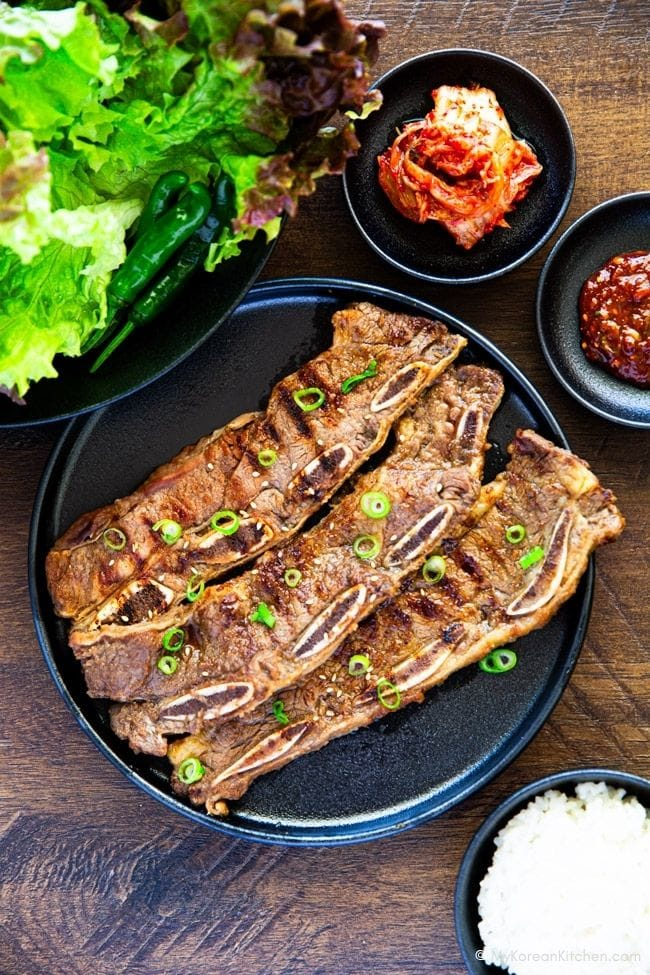

LA Galbi (Korean BBQ Short Ribs)

LA galbi (엘에이 갈비) is a Korean BBQ dish made from beef short ribs that are cut across the bone, rather than along it like traditional Korean galbi. This flanken-style cut creates thin strips with three small cross-sections of bone, making the meat quicker to marinate and faster to cook.
It’s commonly believed that LA galbi originated with Korean immigrants in Los Angeles who adapted traditional galbi to suit the local butchering style – hence the name “LA” galbi. Another theory suggests that “LA” refers to the word lateral, describing how the ribs are sliced. Either way, this dish has become a Korean BBQ favorite, both in Korea and abroad.
Ingredients
- 800 g LA Galbi (Korean BBQ short ribs) (1.8 lb), Available at Korean grocery stores or Korean butchers.
- 6 Tbsp soy sauce (I use Kikkoman.)
- 3 1/2 Tbsp dark brown sugar
- 2 Tbsp rice wine
- 70 g apple (cored), Royal Gala, Fuji, or Pink Lady work well. If you have Korean or Nashi pear instead, they're even better for sweetness and tenderizing—just peel and remove the seeds before using. (2.5 oz)
- 1/2 kiwi (seed area removed), about 40g / 1.4 oz
- 1 1/2 Tbsp minced garlic
- 1/2 tsp minced ginger
- A few sprinkles ground black pepper
Instructions
- Check the ribs for any sinew (the silvery membrane) or thick edge fat, and trim it off for a cleaner bite and better texture. A little marbling is great – just avoid the tough or chewy bits. Then soak the meat in cold water for 15 to 30 minutes to help draw out excess blood and impurities. Change the water once or twice during this time, especially if it becomes cloudy or you notice fat rising to the surface.
- Meanwhile, add all the marinade ingredients to a blender and blend until smooth.
- After soaking, pat the ribs dry thoroughly with kitchen paper and place them in a large sealable container. Pour the marinade directly over the meat, then use your hands (wearing food-safe gloves) to gently toss and coat each piece evenly right in the container. Once the meat is well coated, seal the lid and refrigerate.
- Refrigerate the marinated meat for 12 to 24 hours, turning it once or twice during that time to ensure even absorption. This extended marination allows the enzymes from ingredients like pear, apple, or onion to gently break down the meat fibers while infusing every layer with deep, savory-sweet flavor. The longer rest makes a noticeable difference in both tenderness and complexity.
- Take the meat out of the fridge about 15 to 30 minutes before cooking to bring it closer to room temperature.
- Cook the ribs on a BBQ grill, in a skillet, or in the oven over medium-high heat. Grill both sides until nicely caramelized and cooked to your liking – it usually takes 2 to 3 minutes per side.
- For a finishing touch, garnish the ribs with chopped green onions, toasted sesame seeds, or a sprinkle of crushed pine nuts. Serve with a bowl of warm rice, some kimchi, crisp lettuce leaves, and a spoonful of ssamjang (Korean BBQ dipping sauce) on the side - perfect for wrapping everything up into one delicious bite.
Nutrition Info (per serving)
Home